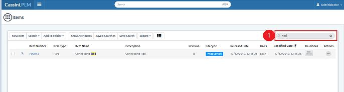

Saved search is one of the interesting features of this application, it is used to save a search record and get details from it easily from the next time without search that item again.
It will save user’s time and useful for faster retrieval of data. If user saved a search from the next time user don’t need to search it again, user can get item details from saved searches.
How to Save a search?
1. Enter Item Number/Name/Type or anything in search text box

2.Click on Save search, Popup will appear
3.Enter Name, and Description (optional)
4.Click on "Create",will get success message.